Pose Editor I
Pose Editor is one of the biggest additions in Kangaroo 5.
To open it, click the function poseEditorApply() and then the button Open Editor:
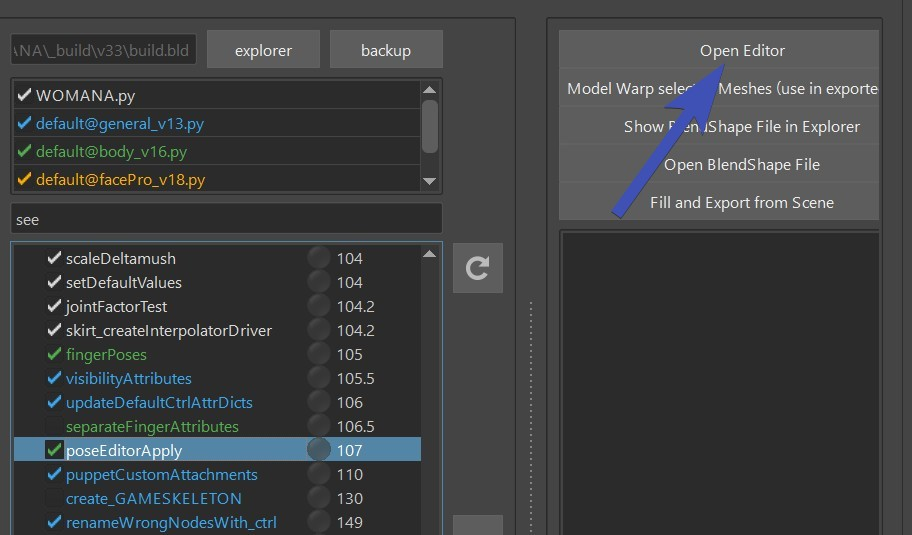
It consists of Interpolators, BlendShape Poses and Ctrl Poses
Video
To see how the Pose Editor works in action, you can also watch this Video.
Especially the model update (Pose Editor II) part has changed.
Interpolators - Calculate the Pose
Interpolators are little setups that analyze the rig to see if and how strong
we are in a pose.
There's a few different types:
- signedAngle - simple rotations like elbow, knees
- cones - 3 dimensional rotations
- mayaPose - 3 dimensional rotations
- upleg - specialized for upper leg going up
- custom - attributes or create your own custom
To add interpolators, just click the Add Button at the very top left of the UI. It tells you what you need to select. And the
selection order doesn't matter here.
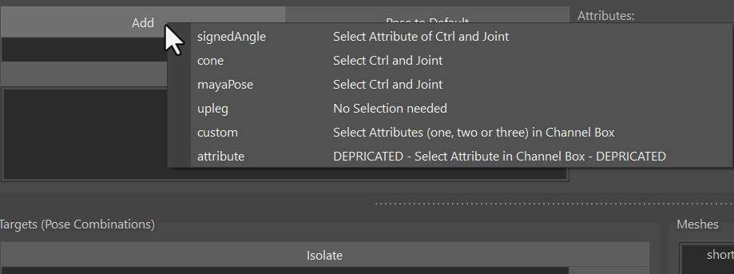
signedAngle
SignedAngle is the simplest one, and great for simple rotations where you can assume that animators
usually just rotate it in one angle.
As the right side of the menu says - Select Attribute of Ctrl and Joint: select the joint, then the ctrl and
it in the Channel Box mark it like this:

Once it created it, special attention is required on the Angle Axis and Up Axis. It might be a bit
confusing, because those are the ones on the joints, not the ctrl!
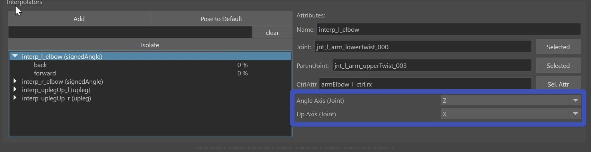
Angle Axis is always the rotation axis of the joints that we want to measure (usually different to the CtrlAttr because
it's in different space). And the Up Axis is one of the other two.
Which one? Just try it out which one is more stable in your case.
Here's a short video how we create the singedAngle for the knee:
In this video we didn't have to set the Angle Axis and Up Axis, becasue on elbows and knees the default is already correct.
mayaPose
This is using the maya native interpolator. It interpolates between all the poses of the interpolator at
once, and normalizes them in some way that whenever you are in one pose, all the other poses are 0.
That's a great thing for when you are doing upper arm or clavicle corrective poses where it's important
that all the poses blend nicely with each others.
But it comes with quite a few disadvantages:
- You can't adjust the timing
- Inbetween the poses, the timing can get a bit unnatural (For correctives it might be fine, but could be an issue for ctrls).
- You always need to have at least 4 poses (manageable, just add a few extra poses you don't use)
-
The math is not understandable for the most of us, so output can be somewhat confusing. And sometimes when things are wrong it might even output INF, or suddenly all poses having the same output number like 0.25.
-
Whenever that happens just try to align them a bit nicer and make sure that you not less than 4 poses.
Here's a short video how we create them for the upper arm:
Cone
Cones just measure how small the angle is between joint and the cone. 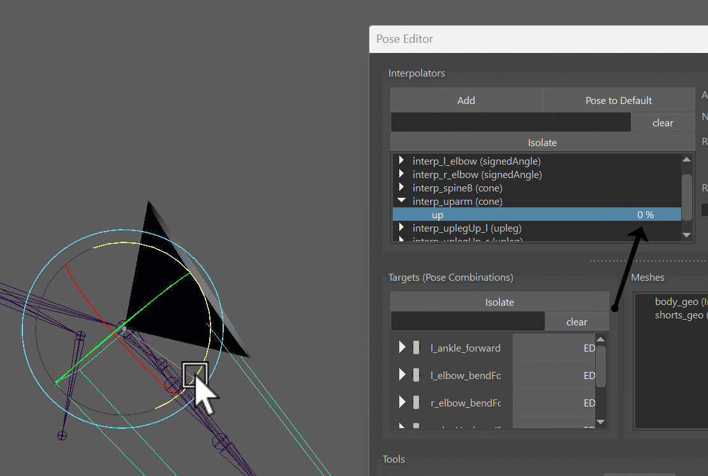
It's also 3-dimensional poses such as the MayaPose, and the first part of just creating them is almost identical to the MayaPose. Actually you can even convert between Cones and MayaPose with right-click on the interpolator!
But then the algorithm they use for calculating the poses couldn't be more different - and you have more options to adjust the timing. And you don't need to have a minimum of 4 poses! Even just one is enough.
Then there's the attribute called Range, which is very important! Neglecting this will put you in trouble.
The first thing you notice on the Range is that it starts from the higher value and goes to the smaller value. The first important thing you ahve to pay atttention to is that the Start (bigger value) needs to be equal or smaller than the positive rotation value, and not bigger than 89: 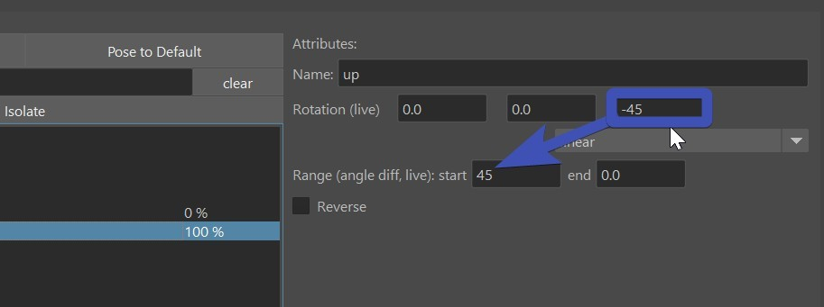
If you love math..
Instead of positive rotation value the correct explanation is actually the angle difference. In the picture above the rotation is (0,0,-45) so the angle distance is 45. So even though the angle of the rotation has a negative value, the rotation distance is still positive. If you have a more complex rotation such as (30,0,-80), the rotation difference would be much harder to calculate, so try to avoid that.
Another thing to be aware with cones is that by default they work great as the rig moves into the pose, but when it moves
further, the pose fades out. And that can get very nasty.
Let's look at this example (which happens a lot in production!). In here I have range as 15-0, so it starts at 15.
Now the issue is as soon as the arm goes just a bit further, the costume (sphere in this case) jumps back:
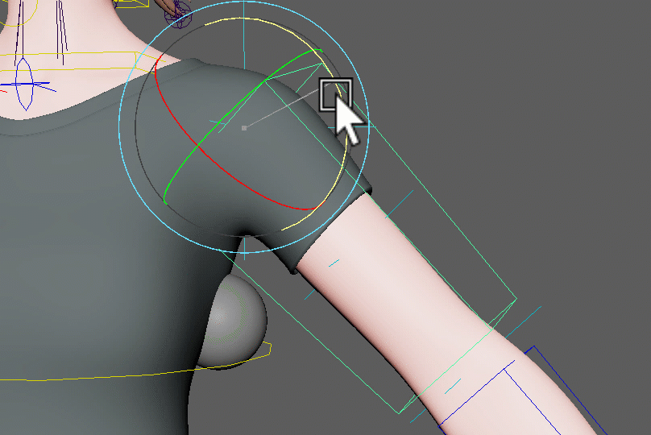
Here's the solution - overshoot the rotation of the pose and set a higher end range:
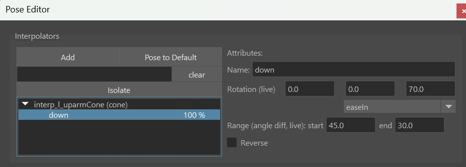
And immediately it'll look much better!

Watch Out
When you do a cone pose or mayaPose on the upper arm, make sure to set the spine end joint as the JointParent! Otherwise
you'll hit issues when the clavicle moves around:
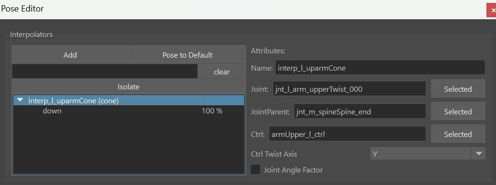
Upleg
This is a very specialized one just for upper leg rotating upwards like in a sitting pose. While you could also do that with Cone or MayaPose, this one is a more special engineered for the uplegs going up. It has a few options such as fading out as the legs rotate outwards. And you can even control if and how much it should fade out when the leg rotates inwards.
Custom
The custom interpolator is good for 2 things:
- drive things by a control attribute
- create your own interpolator type such as an Interpolate By Distance Node

You can see CtrlAttrX, CtrlAttrY and CtrlAttrZ, but you don't need to use all of them
you can just use CtrlAttrX and keep the others empty.
DriverAttr the attribute that actually drives the interpolator. Basically the tool checks what value
the DriverAttr has when the CtrlAttrs reach the pose etc..
You can also think of the DriverAttr as an inbetween step between the CtrlAttr and the actual Pose Output.
In the example of creating an Interpolate By Distance: CtrlAttr would be from an Animator Ctrl, and DriverAttr
would be the actual output value of the distance node.
Tip
If you don't want to use DriverAttr, just give it the same as what you have for CtrlAttrX. This would then be a simple driving pose by an attribute.
Current Limitation
Unfortunately at this time it only works when CtrlAttr starts at 0. If you have an attribute (like scale) where the default is 1.0, this won't work.
Targets - Manipulate the Rig
We can do either BlendShape Targets (Correctives), or Ctrl Targets.
Both of them start in the same way, that you just drag&drop a pose from the Interpolator Table
into the Targets Table.
If you drag more than one pose, then the Target is a combination of the poses, and you get that extra
button (M or S) that lets you specify the blend mode - either Multiply or Smallest.
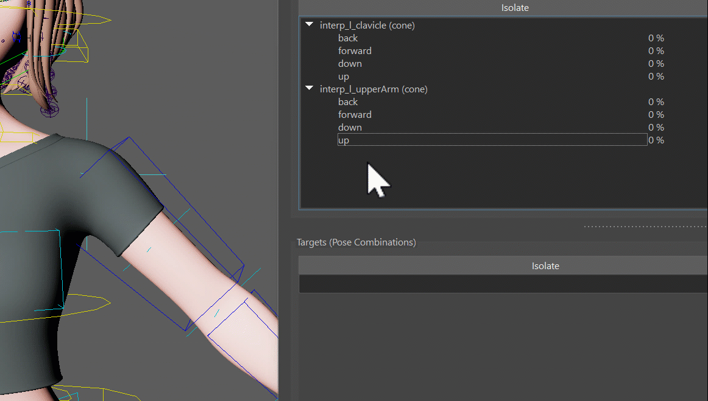
And next we can choose to do either a blendShape, manipulate a Ctrl.
BlendShape Targets
First specify the meshes you want to use for blendShapes by adding them into the Meshes Table
And then select them again and click the EDIT MESH button. This tells the tool that whatever you
sculpt on the mesh will go into that Target.
The tool I used in this gif is Mesh Tools -> Sculpting Tools -> Grap Tool. But when you have the EDIT button activated, you can also select vertices and move them. Or use some of the Geometry Tools like Smooth Vertices
Kangaroo Tool Tip
If you haven't tried out the Smooth Vertices tool yet, sculpting correctives is where it most useful! Because many times we are dealing with vertices that are collapsed and we want to smooth them out again.
Remember
Don't forget to deactivate the EDIT button when you are done!
Ctrl Targets
When you create Targets on Ctrls, it just creates a Ctrl Locator for each Pose that you can move around
Whenever you click the Add/Activate button, it creates a locator if it doesn't exist yet and selects it. If
the locator already exists, it'll only select it.
So that's a multi functional button that you'll be clicking a lot.
Note
You might have an attribute on the master group called Poses Loc VIS that needs to be set to On to
see the locator right away:
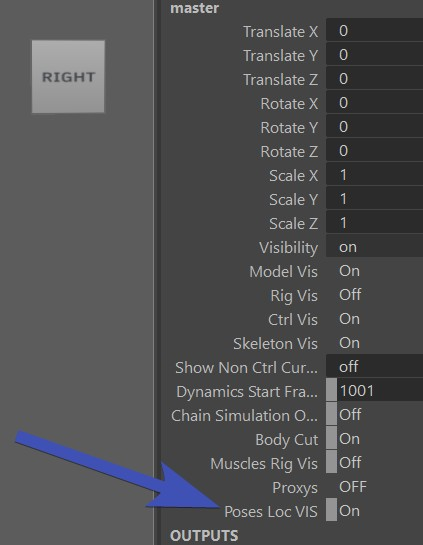
In the ctrl hierarchy (outliner) you can see all the locators, for each target one. And those that are activated are shown
while the others get hidden automatically. This way you could even adjust poses without the UI.
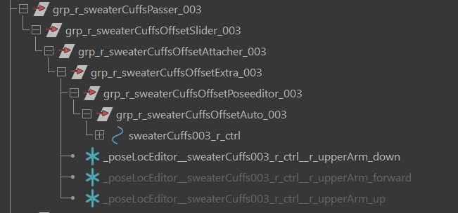
But most of the time you'll be faster to just select the locator by using the Add/Activate button
dResetAttrs
When you have a for example deltaMush or a blendShape target that shrinks the
skin to avoid collisions, it would constantly get into the way of sculpting. It would also corrupt stuff when you export
or apply the blendShapes.
For that we can add some attributes into the dResetAttr dictionary. Just open it with the JSON Editor
and add things in there. You can see by default it already has all the fk2ik switches that make sure you
are in FK while setting poses
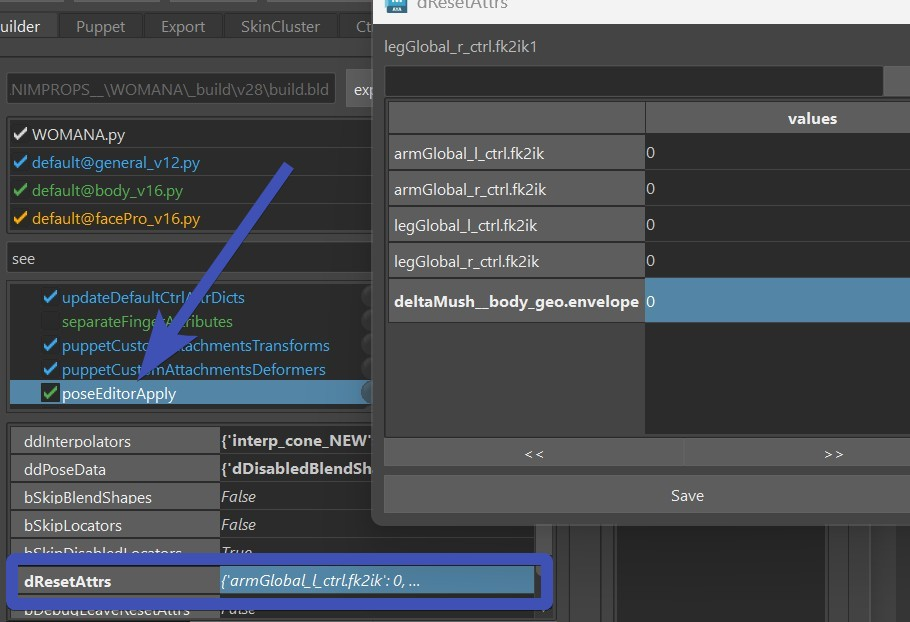
Don't Forget
Do not forget the dResetAttr! We might be tempted to not bother because we can get things done without touching it, but it can get very uncomfortable later when you realize that some deformer quietly corrupted your poses more and more whenever you built or published.
Mirror
For mirroring things it's very important that the names of the interpolators and Targets specify if it's a left, right or middle pose.
So if an interpolator is called interp_signedAngle_NEW, it's a middle one! Name it properly to something like interp_l_elbow.
The _l_ in there tells that it's a left one.
Similar for the targets. But if you renamed the interpolator properly before creating the target, the target usually already has
a good name.
Mirror Interpolator
For mirroring any target, you first have to mirror the Interpolator. Don't worry if you forget, he'll remind you.
Right click on Interpolator -> Mirror:
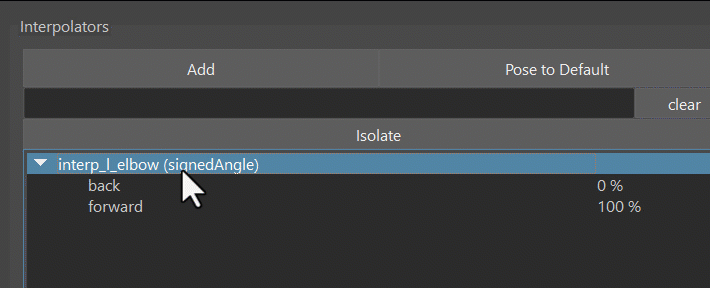
Flip BlendShape
First you have to set the mirror table with the right click menu on the mesh in the Meshes Table.

Your options are:
- middle mesh (edgeflow)
- middle mesh (vertex positions)
- middle mesh (face points)
- side meshes (ids)
- side meshes (vertex positions)
- side meshes (face points)
Edgeflow is that mirror algorithm where it takes a middle edge and with that finds all the other vertices by the edge connection patterns.
Then to do the actual flipping: Right click on Targets -> The Side:Pose Combinations and Flip Meshes 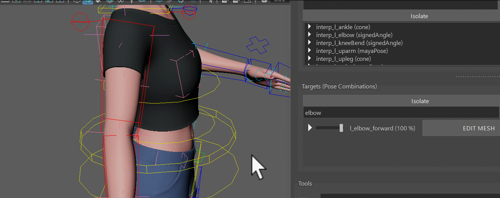
Split into Left/Right
Flipping does not work well in cases where you want to sculpt a little bit in the middle (central line of the character), such as on upperLegUp shapes. It'd work great for just each side separately, but when you have left and right combined such as in a sitting pose, it won't blend well together. Theoretically you could create one for left and one for right and then do a combination target for both together. But in most cases it's nicer to do the Split Target option.
To do splitting - when sculpting it, have the EDIT button activated just on the left target (or the right one, wouldn't matter).
So at first you end up with a situation where when you activate the left target, the right side gets activated the same time.
And all you have to do is click Side:Pose Combinations and Split Current Combined Shape into Left/Right

Mirror Ctrls
For the ctrls you just choose Side:Pose Combinations and Ctrls. You can do either the selected ctrls, or if you don't have any ctrls selected, he'll do all 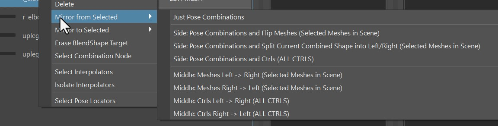
Export
Click the FillAndExport button. It fills the ddInterpolators and ddPoseData attributes, and creates the file poseEditorExports.ma in the mayaImport folder. 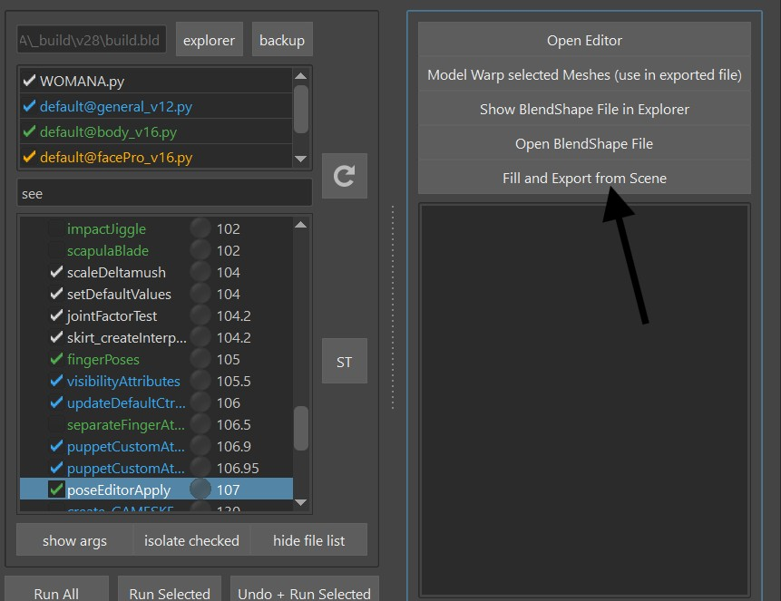